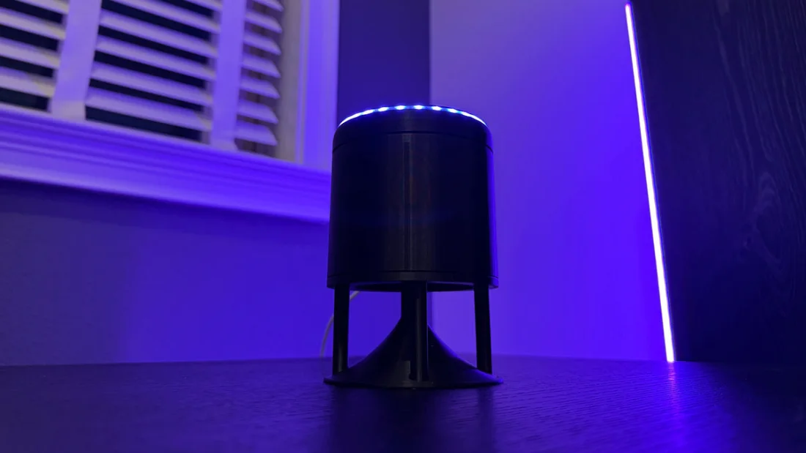
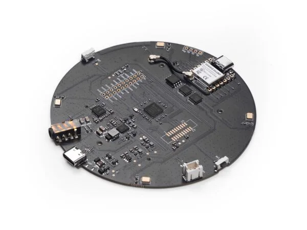
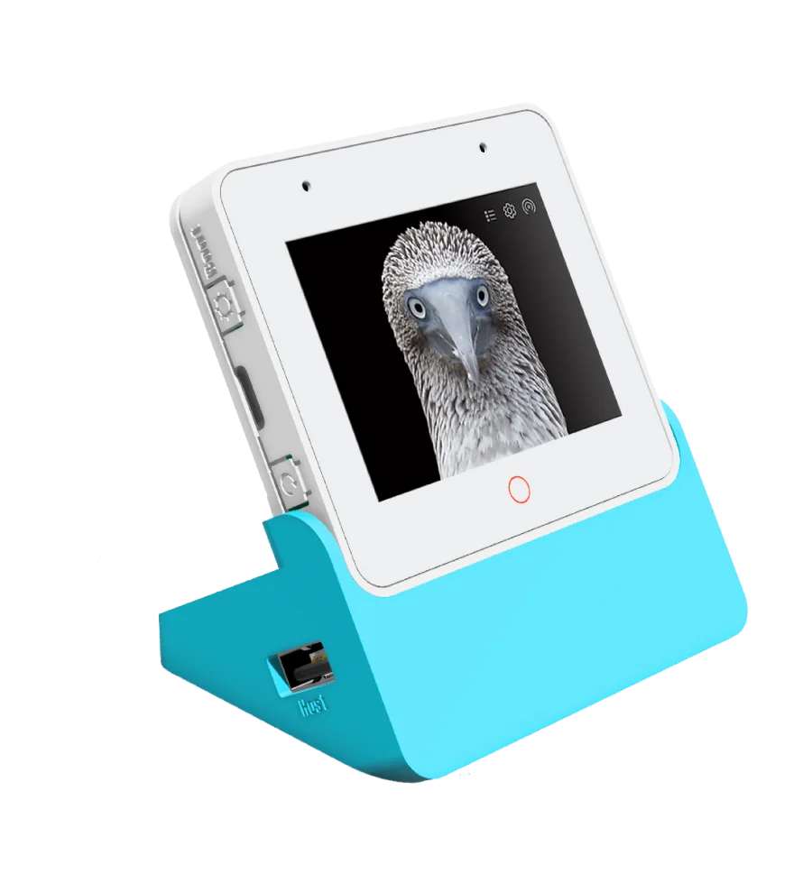

Tater turns supported voice hardware into room-aware satellites for natural conversation,
local wake detection, timers, announcements, and synchronized whole-home music.
Support is tied to the exact boards and generations below. Similar-looking hardware may use different chips, flash layouts, or recovery paths.
Family 01 · Tater Native
Purpose-built ESP32-S3 satellites.
Official native firmware connects directly to Tater—no YAML and no per-device firmware editing. Tater owns pairing, settings, wake words, diagnostics, and OTA updates.
voicepe
Home Assistant Voice Preview Edition
Compact voice hardware with an XMOS audio front end, dual microphones, an LED ring, a volume dial, and a physical microphone-mute switch.
16 MBHardware AEC3.5 mm output

satellite1
Satellite1 / Sat1
Supported from Public Batch #1 Beta.1/rev4.1 onward, with a four-microphone XMOS front end, 24-pixel ring, volume controls, and internal or AUX output.
16 MB4 microphonesAUX + internal

respeaker_xvf3800
ReSpeaker XVF3800
A four-microphone XMOS platform with direction-of-arrival telemetry, hardware mute, a 12-pixel ring, and a dedicated 8 MB Tater firmware layout.
8 MB4 microphonesXMOS DoA

s3_box
ESP32-S3-BOX-3 Display
A 320 × 240 display satellite for voice, clock and status cards, timers, volume and mute state, OTA progress, and Tater-provided display feeds.
Give exact unlocked Echo models a private second life.
Tater replaces the voice application on supported hardware with native wake detection, audio processing, displays or LEDs, controls, Bluetooth features, Sendspin, and verified OTA updates.
Exact models only. Each device must complete the documented amonet unlock for its codename before installing Tater firmware.
The Amlogic A113X/S420 model runs Tater Linux Voice with local wake detection, playback-reference AEC, room pairing, hardware controls, passive BLE presence, Sendspin, audio scenes, and signed OTA.
Amlogic S420256 MB RAM512 MB NANDSendspin
First install: the ThirdReality debug board is required for factory flashing or recovery. Routine updates preserve pairing and settings over OTA; browser USB flashing is not supported for this model.
Hardware names and product imagery belong to their respective owners and are shown only to identify compatibility. Sources: Home Assistant, FutureProofHomes, Seeed Studio, Espressif, and the official Tater firmware repositories.